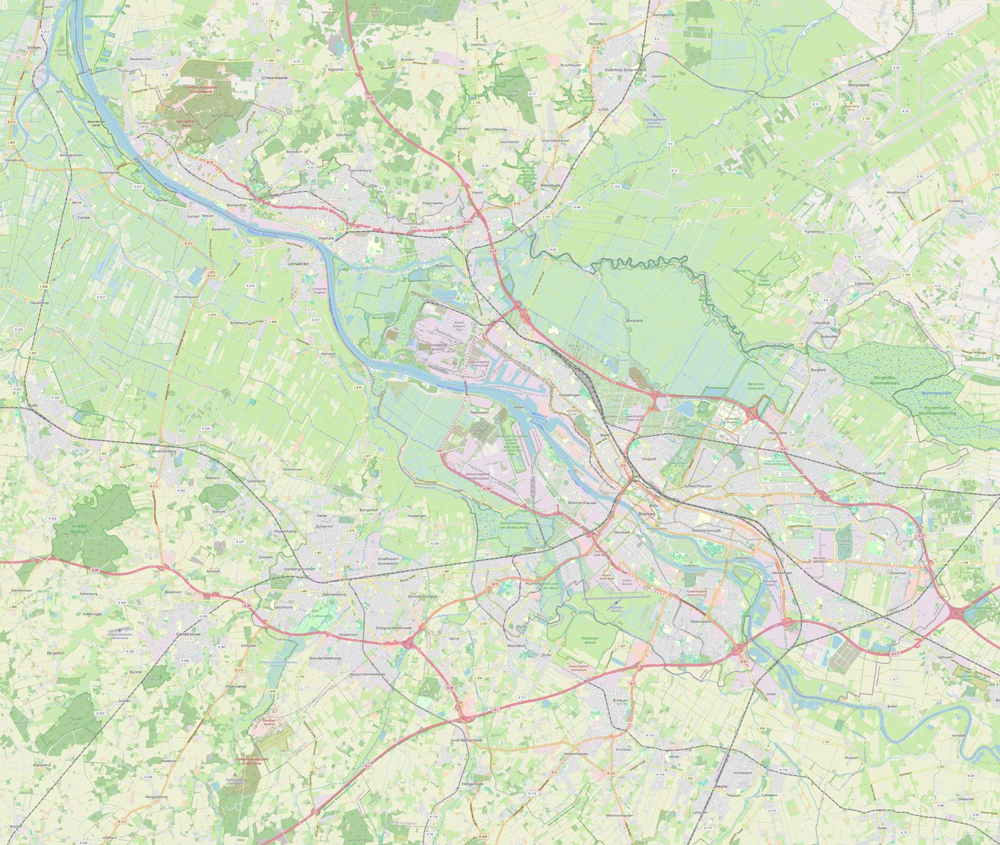

Bremen Tatkarte
Pressemeldungen der Polizei Bremen, georeferenziert
Zeitraum:
Alle Daten
Letzte 12 Monate
Letzte 90 Tage
Letzte 30 Tage
Genauigkeit:
Adresse + Stadtteil
Nur genaue Adresse
Nur Stadtteil-Angabe
genaue Adresse
nur Stadtteil (Halo)

© OpenStreetMap contributors
Delikttyp